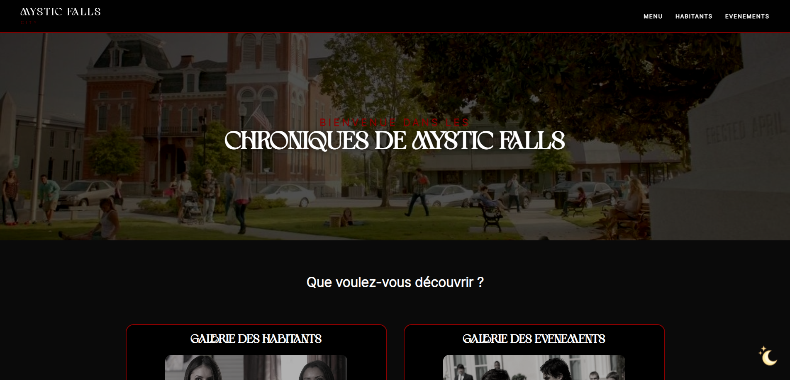
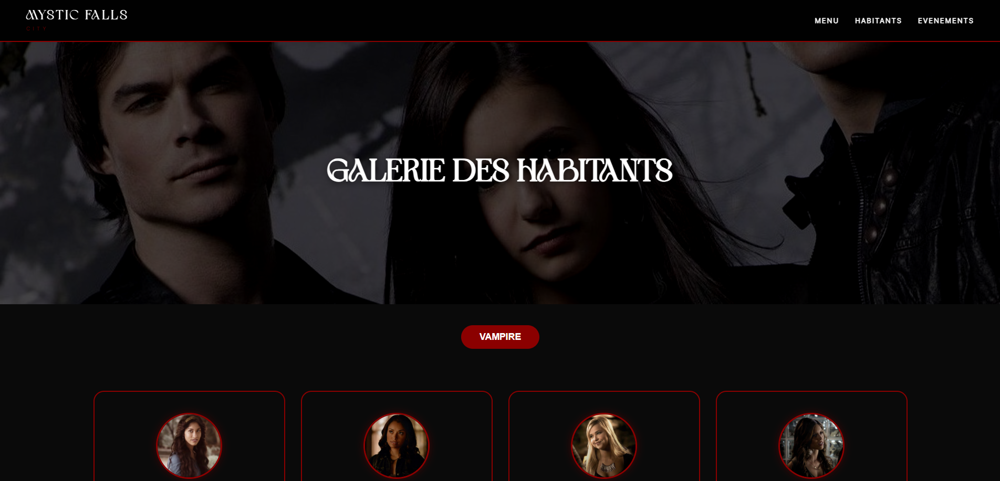
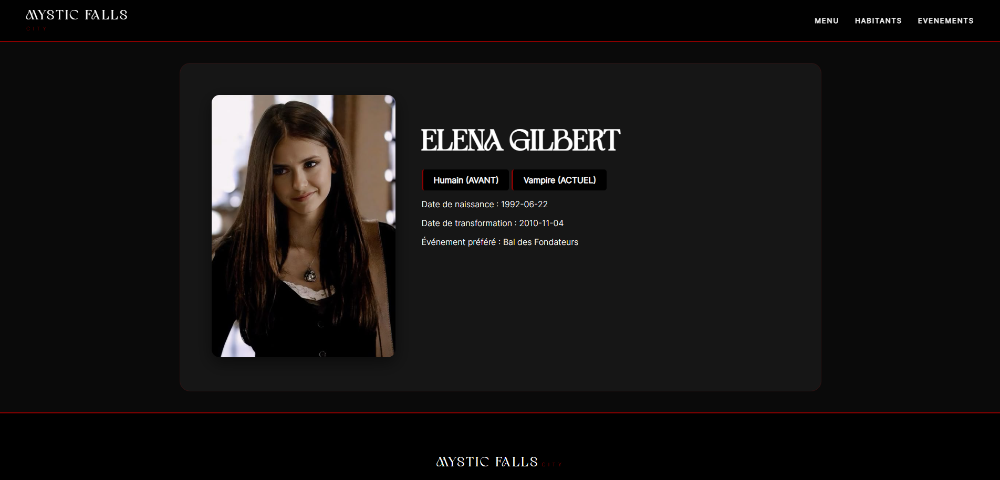
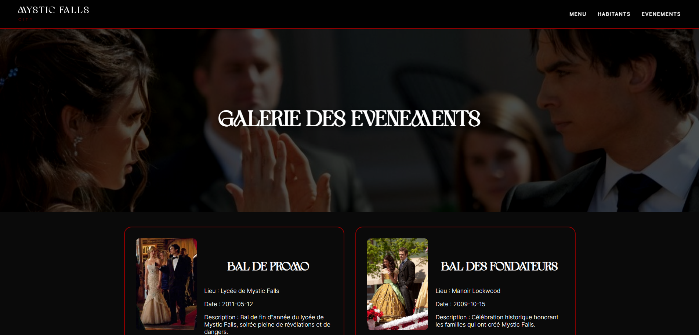

Contexte du projet ✧˖°.
‧˚ʚ Ce projet consistait à concevoir et développer un site web dynamique complet dédié à l'univers de notre choix qu’il soit réel ou fictif. Pour ma part, j’ai fais le choix de le réaliser sur la ville de Mystic Falls, inspiré de la série The Vampire Diaries. L'objectif était de lier une base de données relationnelle à une interface immersive pour afficher et gérer les informations souhaitée.
‧˚ʚ Ce projet m'a permis de développer mes compétences en développement back-end (PHP/MySQL) et en intégration front-end (HTML/CSS/JS). J'ai renforcé ma maîtrise du code sécurisé (protection des formulaires et des mots de passe) et de l'outil Git pour sauvegarder mon projet. Gérer ce projet de A à Z a prouvé ma capacité à lier la logique du code à la création d'un univers visuel, afin d'offrir une expérience utilisateur cohérente.
Démarche & Réalisation ✧˖°.
‧˚ʚ Dans un premier temps, j'ai modélisé la base de données avec MySQL pour lier les habitants, les espèces et les événements. J'ai ensuite mis en place un wireframe augmenté pour visualiser la navigation et les requêtes SQL de mes pages. Côté développement, j'ai codé mes pages à l’aide de Visual Studio Code en HTML/CSS avec un design responsive, sombre et immersif rappelant le côté Vampire de la série. J'ai utilisé le PHP pour créer des formulaires sécurisés et j'ai également protégé l'espace administrateur avec une page de connexion par mot de passe. Enfin, j'ai intégré trois scripts en JavaScript pour ajouter des filtres au clic et des animations, avant de versionner mon code avec Git et de mettre le site en ligne.
Rendus ✧˖°.




Présentation des différentes pages du projet Mystic Falls.